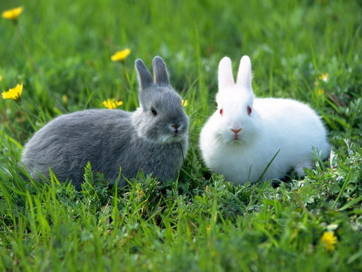

กระต่ายเป็นสัตว์เลี้ยงลูกด้วยนม ประเภทสัตว์เลือดอุ่นที่มีขนาดเล็ก มีประสาทสัมผัสในการดมกลิ่นที่ดีมาก ลักษณะเด่นของกระต่ายเป็นสัตว์ที่มีขนปุกปุยทั่วลำตัว หางกลมสั้น ใบหูยาวเมื่อเทียบกับสัตว์อื่น มีความว่องไวปราดเปรียวมากในการระแวดระวังภัย กระต่ายมีระบบการมองเห็นดีกว่าสัตว์ชนิดอื่นมาก เพราะเป็นสัตว์ที่หากินกลางคืน แต่มองเห็นได้เพียงแค่ 2 สีเท่านั้น คือ สีเขียวและสีน้ำเงิน
กระต่ายเป็นสัตว์ฟันแทะและกินพืชเป็นอาหารเท่านั้น อาหารกระต่ายได้แก่ หญ้า และพืชผักชนิดต่างๆมักอาศัยอยู่ในที่ราบโล่งที่เป็นทุ่งหญ้ามากกว่าป่าทึบ โดยขุดโพรงใต้ดินเป็นรังและที่อยู่อาศัย กระต่ายเป็นสัตว์ที่สืบพันธุ์เร็วปีหนึ่งๆ กระต่ายสามารถออกลูกได้ 2-3 ครั้ง ครั้งละประมาณ 2-3 ตัว กระต่ายเป็นสัตว์ที่ตื่นตกใจง่าย